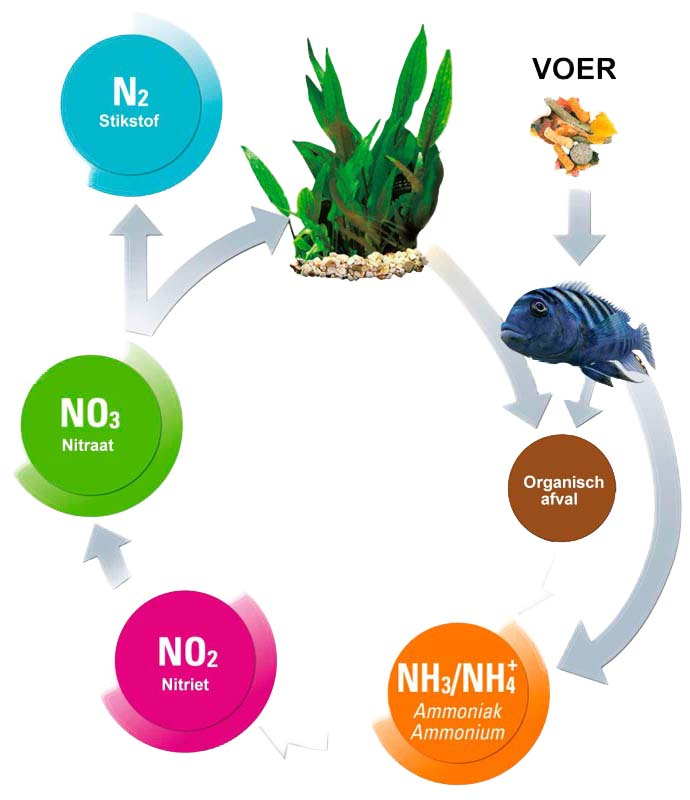

Welkom op onze website!
Wij willen je graag helpen met het vinden van de juiste biotoop voor je vissen. Want iedere vis heeft zijn eigen leefomgeving en waterwaardes waarin ze graag zwemmen. Via navigatiemenu kan je de verschillende biotopen vinden en de bijpassende waterwaardes.
Vragen?
Vragen over je biotoop of je vissen? Neem contact met ons op via ons contact formulier. Hoe meer informatie je geeft hoe beter we kunnen helpen.
Hoe worden je waterwaardes beinvloed? Dat vind je in een handig schemaatje hieronder.
